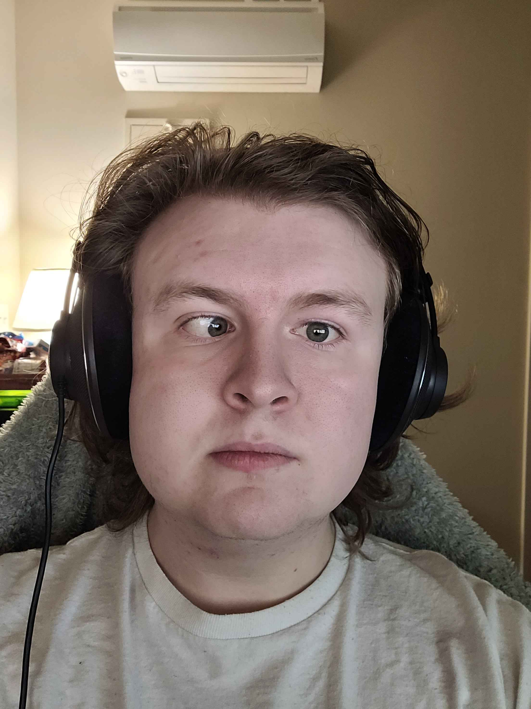

Introduction
Christopher Betts || Cold Bat
Personal Background: Born in Durham NC and have lived there my whole life up until going to UNCC. I originally was an Electrical Engineer, but I had some bad experiences so I decided to switch to Data Science.
Academic Background: Currently a Junior majoring in Data Science with a minor in Software Development.
Background in this Subject: I have always been a data driven person. I have some experience in Java, Python, Lua, C++, and RobotC.
Primary Computer Platform: Windows 10 IOT Enterprise LTSC 2021
Courses I'm Taking & Why:
- SOC 1101 - Introduction to Sociology: Elective credit, to learn more about the world.
- ITIS 3135 - Web-Based Application Design and Development: the option I chose for my optional class for my Software Development Minor.
- STAT 3160 - Applied Multivariate Analysis: Required for Data Science Bachelor's Degree.
- GEOL 1200 - Physical Geology: Gen-Ed credit
Funny/Interesting Item to Remember me by: I have at one point held world records in the Web port of Marble Blast under the name “Toumo”
I'd also like to Share: I am 1 degree of separation from Noah Munck, the actor for Gibby from iCarly, and 2 degrees of separation from DaxFlame.